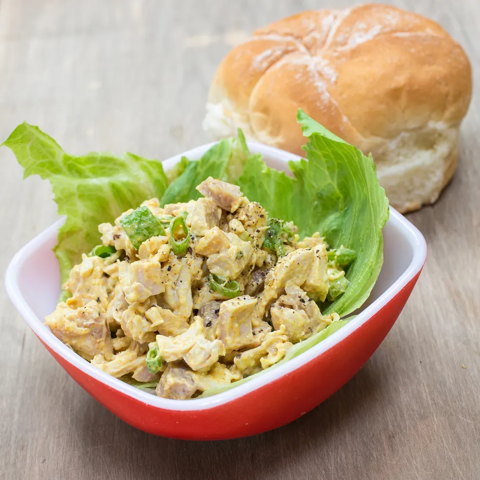

Curry Chicken Salad

Description
This recipe is for making an individual serving of our delicius curry chichen salad. Great for having on a hot summers day.
Ingredients
- 1 3/4 cups chicken broth
- 1 1/2 lb skinless boneless chicken breast
- 1/2 cup mayonnaise
- 1/3 cup plain yogurt
- 5 teaspoons curry powder
- 1 tablespoon fresh lime juice
- 1 teaspoon honey
- 1/2 teaspoon ground ginger
- 1/2 teaspoon salt
- 1/4 teaspoon black pepper
- 1 medium red onion, chopped (1 cup)
- 1 firm-ripe mango (3/4 pound), peeled, pitted, and chopped
- 1 cup red seedless grapes (5 ounces), halved
- 1/2 cup salted roasted cashews, coarsely chopped
Steps
- Bring 4 cups water to a simmer with chicken broth in a 2- to 3-quart saucepan. Add chicken and simmer, uncovered, 6 minutes. Remove pan from heat and cover, then let stand until chicken is cooked through, about 15 minutes. Transfer chicken to a plate and cool 10 minutes. Chop into 1/2-inch pieces.
- While chicken is cooling, whisk together mayonnaise, yogurt, curry, lime juice, honey, ginger, salt, and pepper in a large bowl. Add chicken, onion, mango, grapes, and cashews and stir gently to combine.